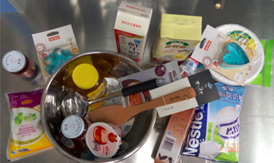
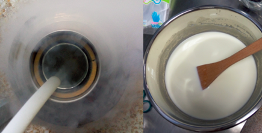

液氮冰淇淋制作大法
先贴图，再补充，可？
去年夏天就想做液氮冰淇淋，而这个想法更早是来源于本科时代的《超导理论》课，记得教授还提醒我们说刚做完之后不要立刻吃，否则会粘舌头云云。那时我的内心是激动的，用知乎体来表述就是“吃液氮冰淇淋是一种怎样的体验？”不过，对于我这种geek型吃货而言，做的过程显然也是一种享受呐。
准备器具和食材
液氮：空气中大量存在的氮气，液化后就是液氮了，温度77K (-196°C)，所以可以迅速使牛奶等凝固。制作液氮冰淇淋不需要在冰箱冷冻几个小时，因而口感比较细腻。液氮温度很低，但短暂接触不会有危险（莱顿弗罗斯特效应），不过还是注意点为好，像前段时间看到有外国狂人做“液氮冰桶挑战”还是有作死的嫌疑。液氮很便宜，大约3块/升，比可乐还要便宜些，恩，成本很重要，好吃不贵的重要前提啊。那用什么装液氮呢？生活用具中也就暖瓶最合适，冻不坏而且能保温！
直接上图吧。。。

怎么这么一堆东西！我第一眼看到也有这个想法。其实，这不是我买的。我把液氮冰淇淋的想法告诉了其他吃货，然后我列一个单子（在下面），然后吃货们又脑补了些（他们是对的......）。
-
不锈钢盆：制作的主战场，大而深；
-
木勺（电动打蛋器可选）：搅拌
-
纸杯（最好是酷酷的玻璃杯）：分装
-
牛奶1L、淡奶油1L、白砂糖一袋
-
辅料如香草粉、抹茶粉、酸奶等
制作过程
液氮冰淇淋制作只需要几分钟（用打蛋机只需要一分钟），把牛奶和淡奶油1:1混合后，加入香草粉（其他的口味看自己爱好），搅拌均匀。然后一遍倒液氮，一遍搅拌就行。开始要倒得慢一点，搅拌得快一点。

最左是冰淇淋原液，闻着还挺香。搅拌的过程不要让白色的水汽散掉，均匀地倾倒液氮。右边是最后形成的冰淇淋，已经基本固化，看个人口味，可以调整固化程度。我比较喜欢没有完全固化的冰淇淋，口感好。
吃的部分其实也很重要，那就要发挥各吃货的想象啦。后面也做了好几次，本来准备了玻璃杯之类，新添了蓝莓酱等，但都来不及拍图......
其他
还学了Sheldon Cooper他们做了炸香蕉，但好废液氮啊，口味没啥特别的嘛。
吃货们后来脑洞大开，放了果冻到混合奶液里面去，结果后来就搅拌不动了，口感也不如纯液体做得细腻。
这篇文章本来应该7月份写的，但是吃着吃着就懒得动笔啦。